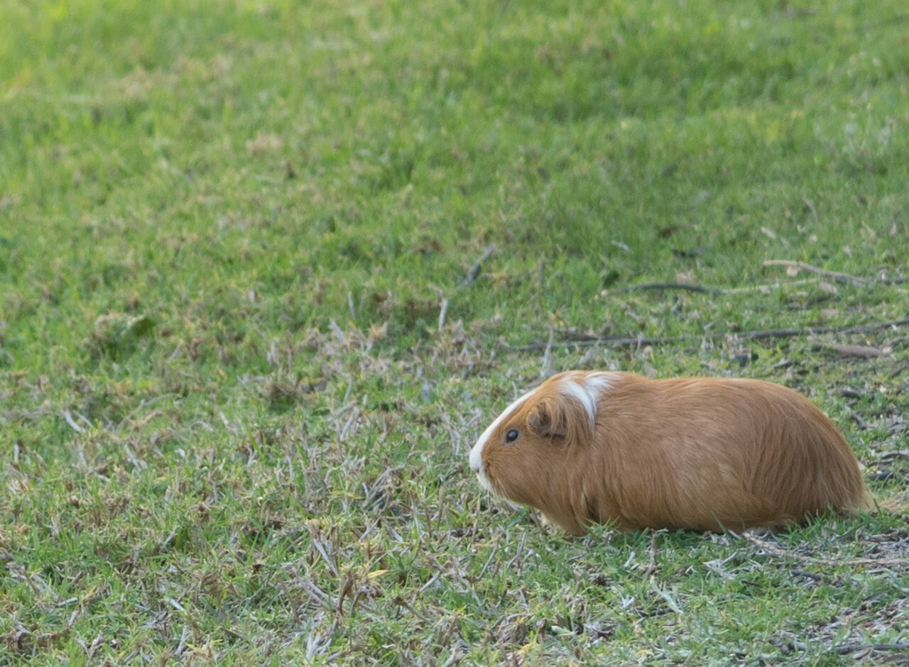
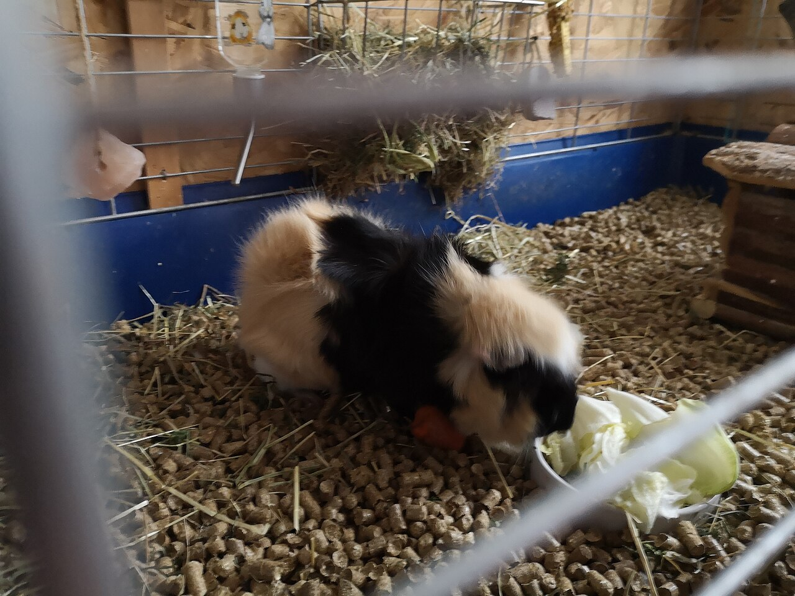
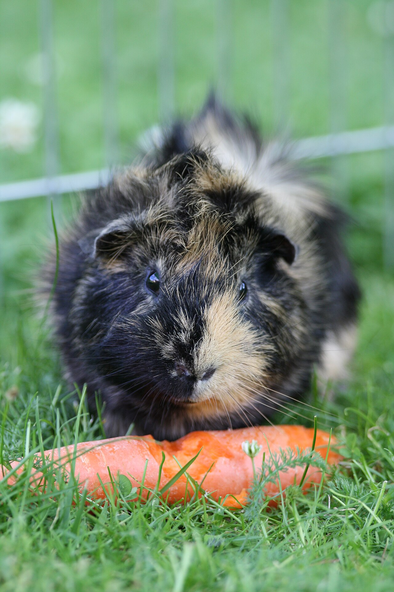
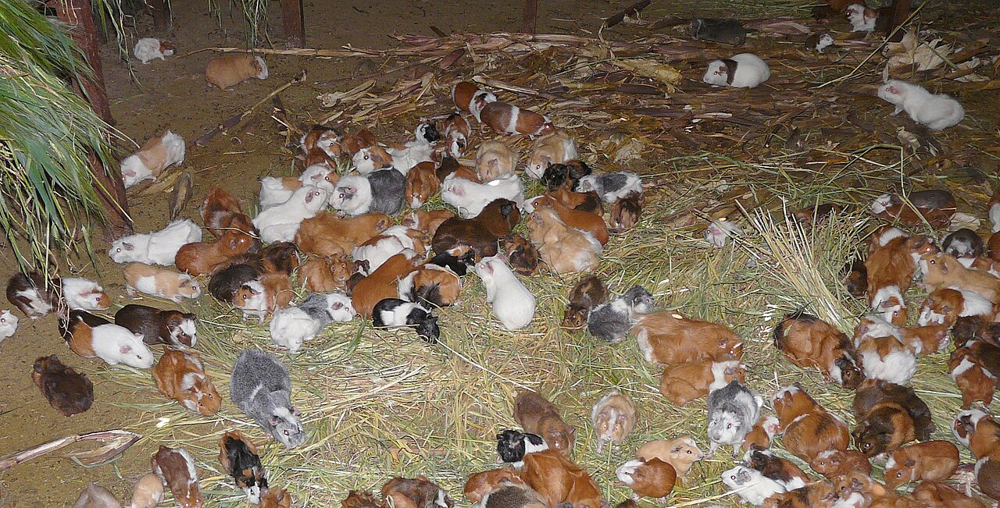
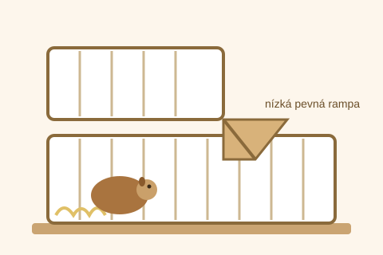
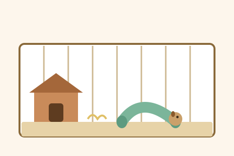
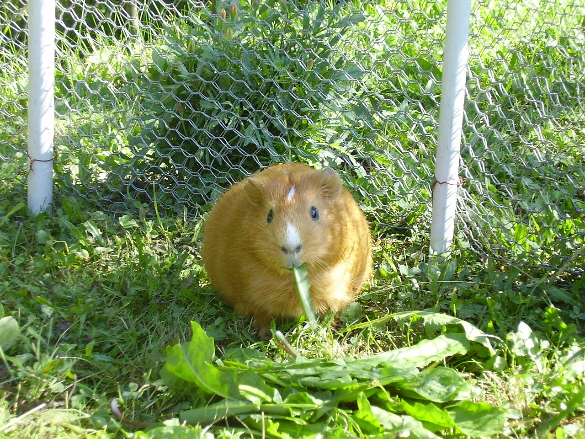
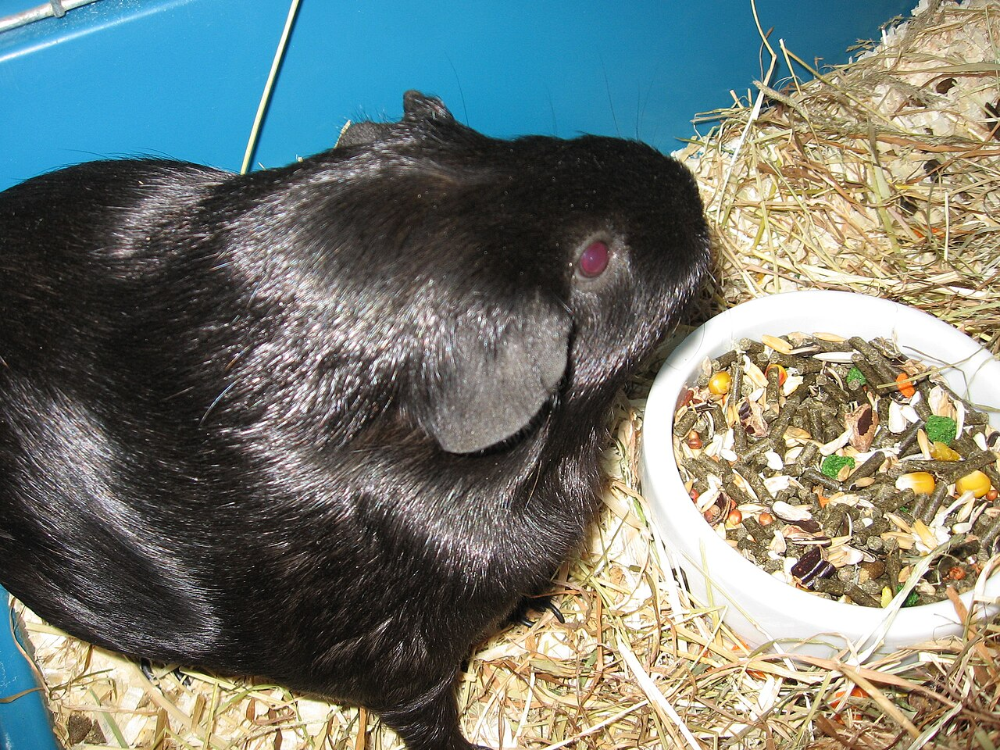

Jak vypadají

- Mořče je kulaté a chlupaté.
- Má krátké nožky a malá oušky.
- Nemá ocásek.
- Váží asi jako velké jablko.
Co jí

- Mořče jí hlavně seno.
- K tomu dostane trávu a zeleninu.
- Má rádo mrkev a papriku.
- Musí pít čistou vodu.

Mořče si neumí vyrobit vitamín C. Proto potřebuje každý den zeleninu.
Kde bydlí
Mořče bydlí v klícce nebo v ohrádce. Hlavní je velká plocha na zemi, kde má místo na běhání. Na zemi má podestýlku a seno a rádo má domeček, kde se schová.
Klece jsou různé. Tady jsou tři druhy:



Jak mořče rozmazlit:
- Velkou plochou na zemi, ať má dost místa.
- Nízkou pevnou rampou, když má klec patra.
- Měkkou podestýlkou navíc.
- Tunely a hračkami na hraní.
- Vlastní miskou a napáječkou.
Jak se o ně starat

- Klícku uklízíme každý týden.
- Vodu a jídlo měníme každý den.
- Mořče ber opatrně oběma rukama.
- Mořče není rádo samo. Nejlíp se mu ve dvou.
Zajímavosti

- Mořče umí pískat, když má radost.
- Když je šťastné, dělá malé skoky.
- Mořče může žít 5 až 7 let.
- Mořče pozná svého člověka.